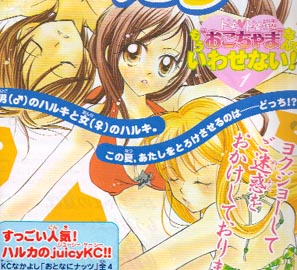
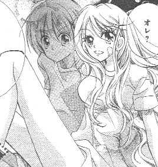
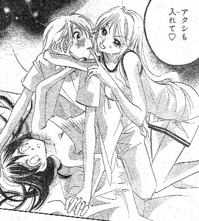

戻る
書評のようなモノ。
「けだものだもの」
フクシマハルカ
「なかよしラブリー 2003年夏の号」
掲載
2003年8月刊行

》この作品の感想を閲覧/投稿する

「けだものだもの」より (C)フクシマハルカ/講談社
セーラームーン等で有名な少女漫画誌「なかよし」の増刊号として発行された「なかよしラブリー」誌に掲載の読み切り作品。作者のフクシマハルカさんは「なかよし」本誌にて「おとなにナッツ」等連載の人気作家さんの一人。ちなみに「おとなにナッツ」では過去に、番外編で男女が入れ替わるエピソードもありました。
で、「けだものだもの」について。
主人公は男子バスケ部のマネージャーをしている小夏という女の子。小夏はバスケ部のエースである「山口センパイ」とラブラブになることを夢見る日々。バスケ部夏合宿が始まって、先輩と親密になるチャンスとばかりに盛り上がっている、という冒頭。それに水を差すように、バスケ部員で小夏とは昔なじみでちょっとガサツな男の子、ハルキが登場する。
こういう場合、永年の少女漫画読者としては、少女漫画のお約束としてヒロインは最終的に先輩にはフラれ、かわりに本当の自分の気持ちに気付いて昔なじみの男の子と結ばれる、という王道の展開が読めるわけです。この作品の場合もまぁ、ぶっちゃけその通りの展開なんですが、ふつうの少女漫画と違うのは、ヒロインの相手役であるハルキ少年が「夜になると女の子になってしまう」という設定。しかもそれならそれで普通は、「○○の呪いで」とか「代々特殊な家系で」とか、なにかしら理由付けがありそうなものなんですが、この作品の場合、そういうのは一切なし。単刀直入というか、直球です。
しかも少女漫画でありながらハルキいわく「オレ夜になると自分で自分の
ヨクジョー
が抑えられなくなるんだ」。
ヨクジョー
って。直球通り越して
剛速球
ですよ。要は、
夜中になると女になってしかも発情してしまう
と。しかもこの設定が、物語の本筋とは実はあまり関係ないというのがポイント。エッチシーン（もちろん「なかよし」の枠内における「エッチ」）を盛り上げる道具立てとしてのみ、ヒロインの相手役の男の子が性転換してヨクジョーする美少女に変身してるという設定が盛り込まれてると思われます。少女漫画の作家さんがエロを描くために性転換ネタを導入した、というのはある意味ちょっとした革命というか事件ですよ、これは。
掲載誌の「なかよしラブリー」は今号は「ドキドキ特集 もうおこちゃまなんていわせない！」と銘打って、中身を読めば分かるんですが、実質的にこれ、「なかよし」読者向けの
ソフトエロ
特集号。最近流行の少女向けエッチ漫画誌を意識したなかよし編集部の実験という感じで。そんなこんなで、掲載の各作家さんたちは何かしらの「エロ要素」を編集に求められた形跡があるんですが、フクシマハルカさんの場合、その要求に対して「美少女化した少年とヒロインとの疑似百合エッチ」という、かなりきわどい路線のエロを持ち出してきたようです。
ヒロインの相手役の少年が可逆性転換する作品としては過去には高瀬綾さんの『聖ルームメイト』（講談社）という作品があって八重洲の好きな作品だったりするわけですが、こちらは宇宙人の血を引く少年がクシャミで性別が入れ替わってしまうという設定で、ヒロインと寮で同室の女の子が同時にヒロインの恋愛相手の少年でもあった、というお話でした（補足トリビア：高瀬綾さんは今回の「なかよしラブリー」にも作品が載っている）。ただ、『聖ルームメイト』における性転換の設定はあくまで物語のプロットの主要素として機能していて、エロティックな描かれ方はしていないわけで。「けだものだもの」の描写を『聖ルームメイト』のそれと見比べると、良くも悪くも隔世の感があります。ヒロインの相手役の少年が女性に変化して、なおかつ最大の見せ場（この作品の場合、女ハルキが小夏を押し倒す場面）でその少年が女性の姿のままで描かれる……これは少女漫画作品としてはほとんど初めてに近い試みじゃないでしょうか。従来の少女漫画だと、女性化した少年が「ヒロイン」として男性と恋愛をするパターン（『不思議の国の少年アリス』『人造少女』がこれ）か、クライマックスにさしかかったところで性別のねじれが解消されるパターンのどちらかが殆ど。それに対して「けだものだもの」はクライマックスが女×女で描かれている上に、ハルキの性転換体質は特に解消されてないので、今後も必然的にヒロインとハルキは夜間限定の「百合」カップルになることが容易に予想できるわけです。この作品がローティーン向け少女漫画作品としていかにチャレンジャーな作品かお分かりいただけたでしょうか。

「けだものだもの」より (C)フクシマハルカ/講談社
男性向け作品や同人誌作品で「神話的性転換」が話作りの道具として一般的に広く認知されるようになったことが間接的に、こういう少女漫画作品の出現を促したのだとしたら、当サイトとしては喜ばしいことなんですが。なお、エロ描写目当てでこの作品を入手するのはあまりお勧めしません。美少女コミック的なエロとはやっぱり方向性が違うんで。
（八重洲一成）
》この作品の感想を閲覧/投稿する
※このページの画像はすべて「なかよしラブリー 2003年夏の号」p.11-60より引用したものです。著作権法に保証される正当な著作引用の範囲内であると信じますが、著作権者様におかれましてこれらの画像引用が不適当であると判断されました場合、
ご一報
いただければ可能な限り速やかに著作権者様の意向に沿った処置を致します。
八重洲メディアリサーチ